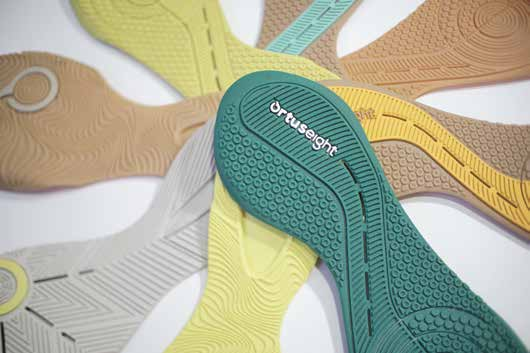
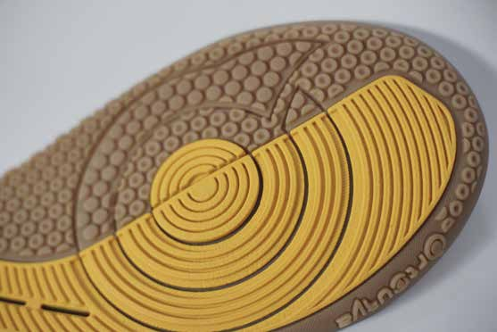
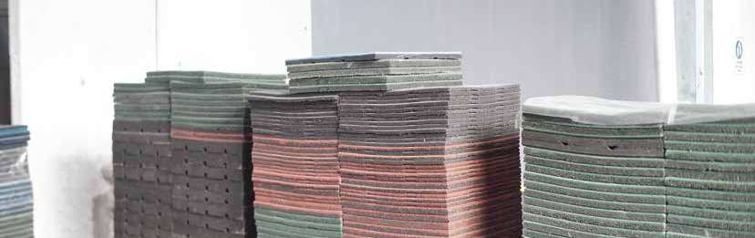
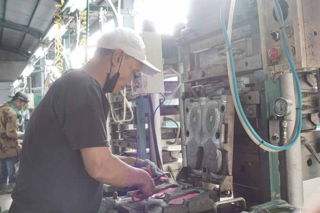

Manufaktur alas kaki · Tangerang, Indonesia
Fondasi untuk
langkah besar.
Outsole premium, foxing, dan matras yang dirancang untuk meningkatkan kualitas serta nilai produk Anda.
2022Berdiri sejak
15+Brand mempercayai kami
3Lini produk
01 Tentang SOL
Kami membantu brand menciptakan produk yang nyaman, kuat, dan berkelas.
PT Semesta Olah Lestari (SOL) adalah perusahaan manufaktur alas kaki yang berbasis di Kabupaten Tangerang. Kami memproduksi outsole kualitas premium dengan harga kompetitif menggunakan mesin berteknologi canggih dan ramah lingkungan.
Setiap produk menyesuaikan karakter dan kebutuhan klien—mendukung brand lokal maupun internasional untuk tumbuh dan bersaing di kelas dunia.
Kenali cara kami bekerja →Mengembangkan kualitas, memilih material terbaik, menjaga ekspektasi klien, dan terus berinovasi.
02 Produk Kami
Dibuat untuk performa.
Dirancang untuk identitas.
Dari formula material hingga pola permukaan, setiap detail dapat disesuaikan dengan kebutuhan brand Anda.

01
Outsole
Outsole premium dengan material pilihan, diproduksi secara konsisten untuk daya tahan dan kenyamanan.

02
Foxing
Karet pilihan dengan spesifikasi yang disesuaikan permintaan klien.

03
Matras
Matras tebal bertekstur lembut yang ramah lingkungan.
03 Proses Produksi

Mesin teruji · Tim terlatih · SOP ketat
Dari ide menjadi produk
Kolaborasi yang terukur di setiap tahap.
- 01
Konsultasi & Spesifikasi
Memahami desain, fungsi, material, dan target kualitas produk Anda.
- 02
Formula & Produksi
Material terpilih diproses dengan mesin berkualitas dan tenaga ahli.
- 03
Quality Control
Pemeriksaan menyeluruh memastikan produk sesuai standar dan ekspektasi.
Mengapa SOL
Kualitas bukan klaim.
Ini sistem kerja kami.
Material Premium
Formula dan material pilihan dari supplier lokal terpercaya.
Pekerja Ahli
Tim terlatih bekerja profesional mengikuti SOP yang ketat.
Servis Profesional
Evaluasi sistem dan pengawasan rutin berbasis data checklist area.
Terus Berinovasi
Peningkatan kualitas dan material mengikuti perkembangan kebutuhan pasar.
PersiapanStandar & identifikasi
→ImplementasiFishbone & checklist
→EvaluasiVerifikasi hasil
04 Dampak untuk Brand
Bukan sekadar komponen.
Nilai tambah untuk bisnis Anda.
Upgrade nilai produk
Material berkualitas meningkatkan value tanpa menghilangkan ciri khas brand.
Kesempatan naik kelas
Kualitas yang konsisten membuka peluang ekspansi menuju pasar lebih luas.
Daya tarik investasi
Produk yang matang memperkuat fondasi brand untuk pertumbuhan berikutnya.
Mari berkolaborasi
Bangun langkah
besar bersama kami.
Ceritakan kebutuhan produk Anda. Tim SOL siap membantu menemukan solusi yang tepat.